The Open MCT platform utilizes the framework layer to provide an extensible baseline for applications which includes:
While the framework provides a more general architectural paradigm for building application, the platform adds more specificity by defining additional extension types and allowing for integration with back end components.
The run-time architecture of an Open MCT application can be categorized into certain high-level tiers:
Applications built using Open MCT may add or configure functionality in any of these tiers.
Once the application has been initialized Open MCT primarily operates in an event-driven paradigm; various events (mouse clicks, timers firing, receiving responses to XHRs) trigger the invocation of functions, typically in the presentation layer for user actions or in the service infrastructure for server responses.
The "main point of entry" into an initialized Open MCT application is effectively the route which is associated with the URL used to access Open MCT (or a default route.) This route will be associated with a template which will be displayed; this template will include references to directives and controllers which will be interpreted by Angular and used to initialize the state of the display in a manner which is backed by both the information model and the service infrastructure.
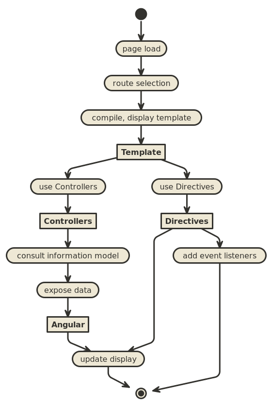
The presentation layer of Open MCT is responsible for providing information to display within templates, and for handling interactions which are initiated from templated DOM elements. AngularJS acts as an intermediary between the web page as the user sees it, and the presentation layer implemented as Open MCT extensions.
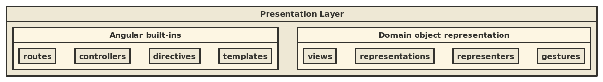
Several extension categories in the presentation layer map directly to primitives from AngularJS:
mct-include directive which acts
as a wrapper around ng-include to allow templates to be referred
to by symbolic names.The remaining extension categories in the presentation layer are specific to displaying domain objects.
actions extension category)
that can be reused across domain objects. For instance, drag and
drop are both gestures associated with using drag-and-drop to
modify the composition of domain objects by interacting with their
representations.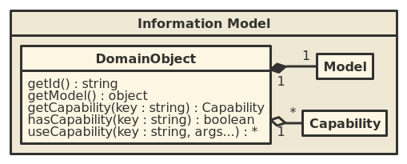
Domain objects are the most fundamental component of Open MCT's information model. A domain object is some distinct thing relevant to a user's work flow, such as a telemetry channel, display, or similar. Open MCT is a tool for viewing, browsing, manipulating, and otherwise interacting with a graph of domain objects.
A domain object should be conceived of as the union of the following:
key argument.) For instance, a persistence capability
has a different interface from a telemetry capability. Using
capabilities requires some prior knowledge of their interface.At run-time, the user is primarily concerned with interacting with domain objects. These interactions are ultimately supported via back-end services, but to allow customization per-object, these are often mediated by capabilities.
A common pattern that emerges in the Open MCT Platform is as follows:
DomainObject has some particular behavior that will be supported
by a service.Capability of that domain object will define that behavior,
for that domain object, supported by a service.Service utilized by that capability will perform the actual behavior.Concrete examples of capabilities which follow this pattern (or a subset of this pattern) include:
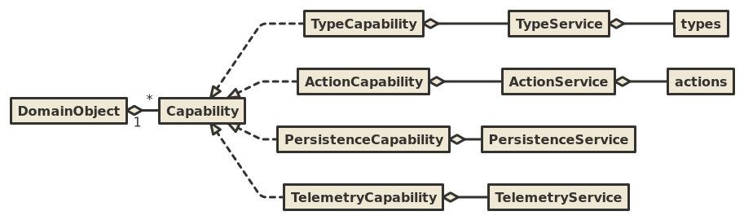
Most services exposed by the Open MCT platform follow the composite services to permit a higher degree of flexibility in how a service can be modified or customized for specific applications.
To simplify usage for plugin developers, the platform also usually
includes a provider implementation for these service type that consumes
some extension category. For instance, an ActionService provider is
included which depends upon extension category actions, and exposes
all actions declared as such to the system. As such, plugin developers
can simply implement the new actions they wish to be made available without
worrying about the details of composite services or implementing a new
ActionService provider; however, the ability to implement a new provider
remains useful when the expressive power of individual extensions is
insufficient.
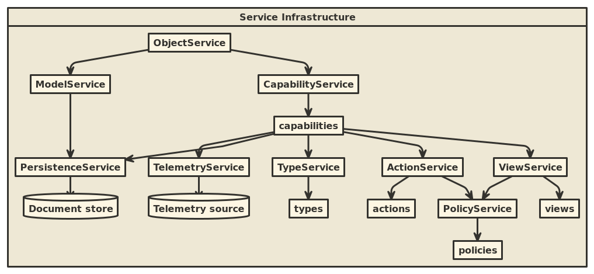
A short summary of the roles of these services:
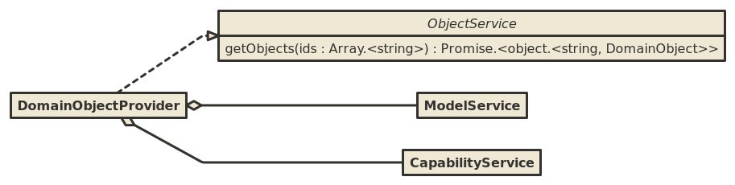
As domain objects are central to Open MCT's information model, acquiring domain objects is equally important.
Open MCT includes an implementation of an ObjectService which
satisfies this capability by:
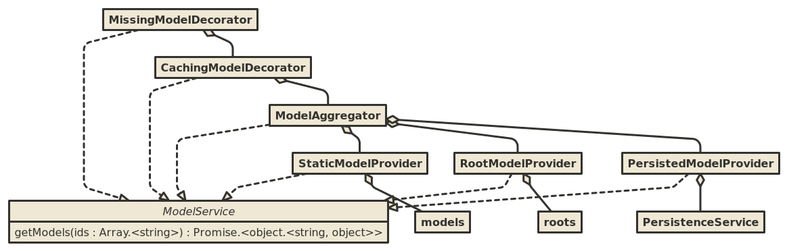
The platform's model service is responsible for providing domain object models (effectively, JSON documents describing the persistent state associated with domain objects.) These are retrieved by identifier.
The platform includes multiple components of this variety:
PersistedModelProvider looks up domain object models from
a persistence store (the PersistenceService);
this is how user-created and user-modified
domain object models are retrieved.RootModelProvider provides domain object models that have been
declared via the roots extension category. These will appear at the
top level of the tree hierarchy in the user interface.StaticModelProvider provides domain object models that have been
declared via the models extension category. This is useful for
allowing plugins to expose new domain objects declaratively.ModelAggregator merges together the results from multiple providers.
If multiple providers return models for the same domain object,
the most recently modified version (as determined by the modified
property of the model) is chosen.CachingModelDecorator caches model instances in memory. This
ensures that only a single instance of a domain object model is
present at any given time within the application, and prevent
redundant retrievals.MissingModelDecorator adds in placeholders when no providers
have returned domain object models for a specific identifier. This
allows the user to easily see that something was expected to be
present, but wasn't.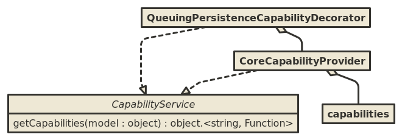
The capability service is responsible for determining which capabilities
are applicable for a given domain object, based on its model. Primarily,
this is handled by the CoreCapabilityProvider, which examines
capabilities exposed via the capabilities extension category.
Additionally, platform/persistence/queue decorates the persistence
capability specifically to batch persistence attempts among multiple
objects (this allows failures to be recognized and handled in groups.)
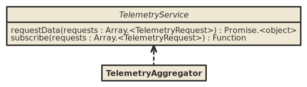
The telemetry service is responsible for acquiring telemetry data.
Notably, the platform does not include any providers for
TelemetryService; applications built on Open MCT will need to
implement a provider for this service if they wish to expose telemetry
data. This is usually the most important step for integrating Open MCT
into an existing telemetry system.
Requests for telemetry data are usually initiated in the
presentation layer by some Controller referenced
from a view. The telemetryHandler service is most commonly used (although
one could also use an object's telemetry capability directly) as this
handles capability delegation, by which a domain object such as a Telemetry
Panel can declare that its telemetry capability should be handled by the
objects it contains. Ultimately, the request for historical data and the
new subscriptions will reach the TelemetryService, and, by way of the
provider(s) which are present for that TelemetryService, will pass the
same requests to the back-end.
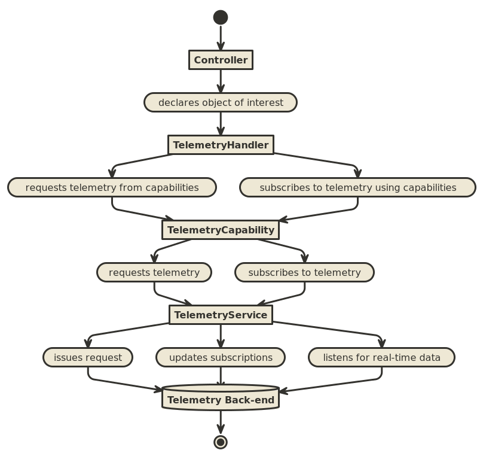
The back-end, in turn, is expected to provide whatever historical telemetry is available to satisfy the request that has been issue.
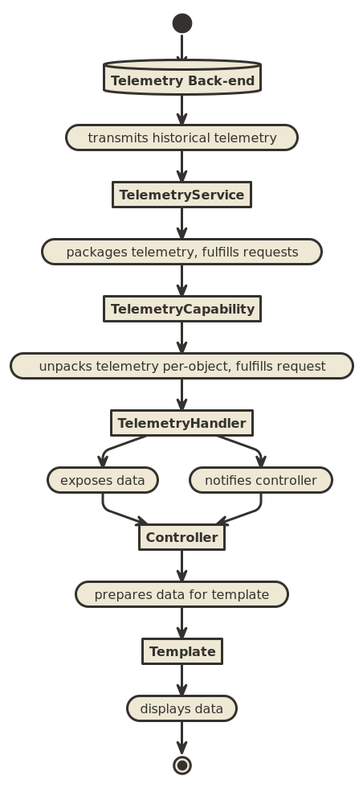
One peculiarity of this approach is that we package many responses
together at once in the TelemetryService, then unpack these in the
TelemetryCapability, then repackage these in the TelemetryHandler.
The rationale for this is as follows:
TelemetryService, we want to have the ability to combine
multiple requests into one call to the back-end, as many back-ends
will support this. It follows that we give the response as a single
object, packages in a manner that allows responses to individual
requests to be easily identified.TelemetryCapability, we want to provide telemetry for a
single object, so the telemetry data gets unpacked. This allows
for the unpacking of data to be handled in a single place, and
also permits a flexible substitution method; domain objects may have
implementations of the telemetry capability that do not use the
TelemetryService at all, while still maintaining compatibility
with any presentation layer code written to utilize this capability.
(This is true of capabilities generally.)TelemetryHandler, we want to group multiple responses back
together again to make it easy for the presentation layer to consume.
In this case, the grouping is different from what may have occurred
in the TelemetryService; this grouping is based on what is expected
to be useful in a specific view. The TelemetryService
may be receiving requests from multiple views.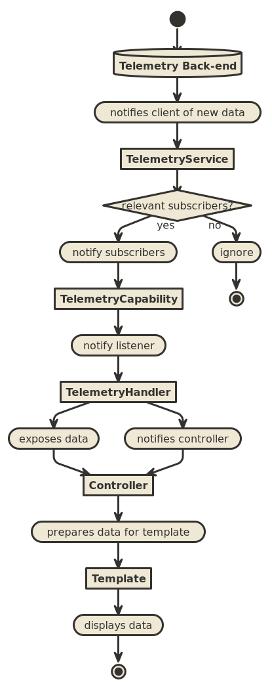
The flow of real-time data is similar, and is handled by a sequence of callbacks between the presentation layer component which is interested in data and the telemetry service. Providers in the telemetry service listen to the back-end for new data (via whatever mechanism their specific back-end supports), package this data in the same manner as historical data, and pass that to the callbacks which are associated with relevant requests.
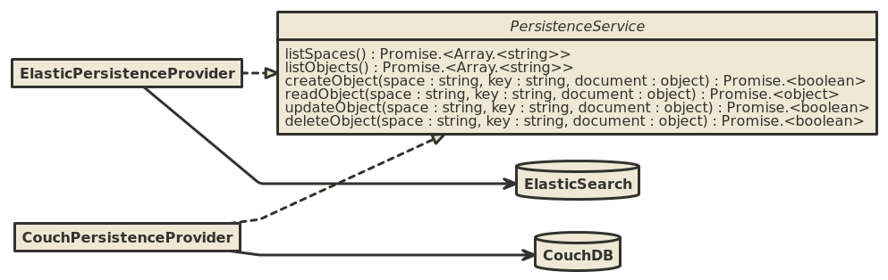
Closely related to the notion of domain objects models is their
persistence. The PersistenceService allows these to be saved
and loaded. (Currently, this capability is only used for domain
object models, but the interface has been designed without this idea
in mind; other kinds of documents could be saved and loaded in the
same manner.)
There is no single definitive implementation of a PersistenceService in
the platform. Optional adapters are provided to store and load documents
from CouchDB and ElasticSearch, respectively; plugin authors may also
write additional adapters to utilize different back end technologies.
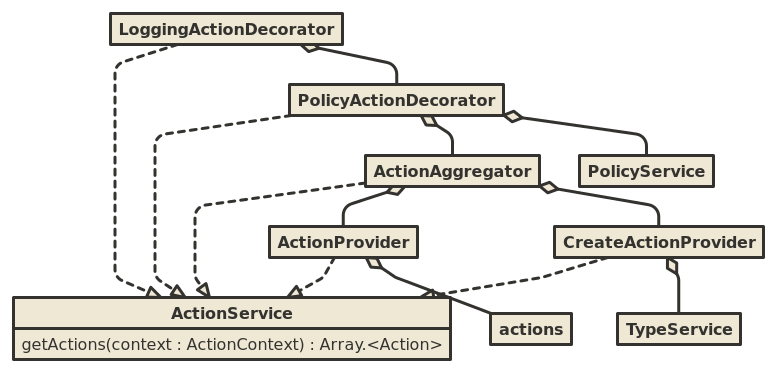
Actions are discrete tasks or behaviors that can be initiated by a user upon or using a domain object. Actions may appear as menu items or buttons in the user interface, or may be triggered by certain gestures.
Responsibilities of platform components of the action service are as follows:
ActionProvider exposes actions registered via extension category
actions, supporting simple addition of new actions. Actions are
filtered down to match action contexts based on criteria defined as
part of an action's extension definition.CreateActionProvider provides the various Create actions which
populate the Create menu. These are driven by the available types,
so do not map easily ot extension category actions; instead, these
are generated after looking up which actions are available from the
TypeService.ActionAggregator merges together actions from multiple providers.PolicyActionDecorator enforces the action policy category by
filtering out actions which violate this policy, as determined by
consulting the PolicyService.LoggingActionDecorator wraps exposed actions and writes to the
console when they are performed.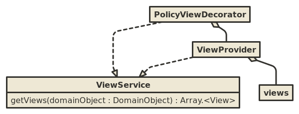
The view service provides views that are relevant to a specified domain object. A "view" is a user-selectable visualization of a domain object.
The responsibilities of components of the view service are as follows:
ViewProvider exposes views registered via extension category
views, supporting simple addition of new views. Views are
filtered down to match domain objects based on criteria defined as
part of a view's extension definition.PolicyViewDecorator enforces the view policy category by
filtering out views which violate this policy, as determined by
consulting the PolicyService.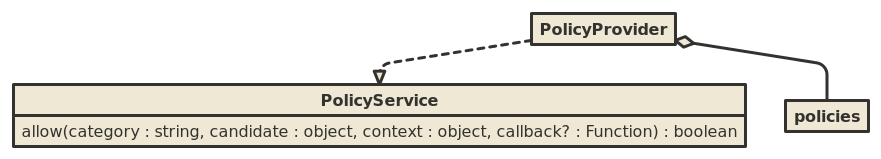
The policy service provides a general-purpose extensible decision-making
mechanism; plugins can add new extensions of category policies to
modify decisions of a known category.
Often, the policy service is referenced from a decorator for another service, to filter down the results of using that service based on some appropriate policy category.
The policy provider works by looking up all registered policy extensions
which are relevant to a particular category, then consulting each in
order to see if they allow a particular candidate in a particular
context; the types for the candidate and context arguments will
vary depending on the category. Any one policy may disallow the
decision as a whole.
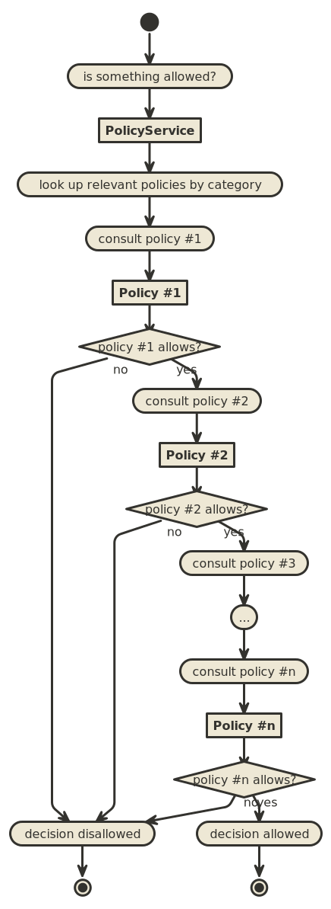
The policy decision is effectively an "and" operation over the individual policy decisions: That is, all policies must agree to allow a particular policy decision, and the first policy to disallow a decision will cause the entire decision to be disallowed. As a consequence of this, policies should generally be written with a default behavior of "allow", and should only disallow the specific circumstances they are intended to disallow.
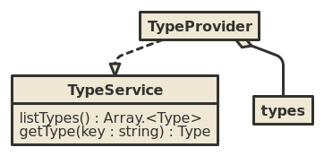
The type service provides metadata about the different types of domain
objects that exist within an Open MCT application. The platform
implementation reads these types in from extension category types
and wraps them in a JavaScript interface.